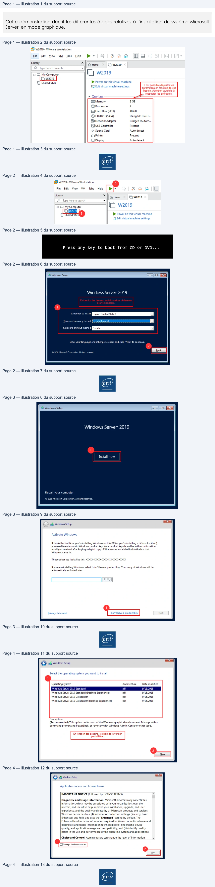
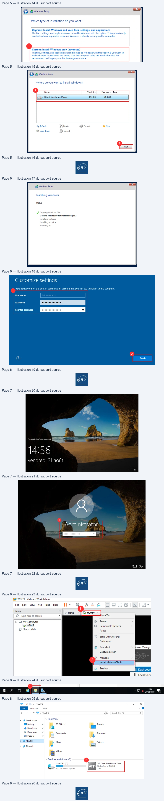
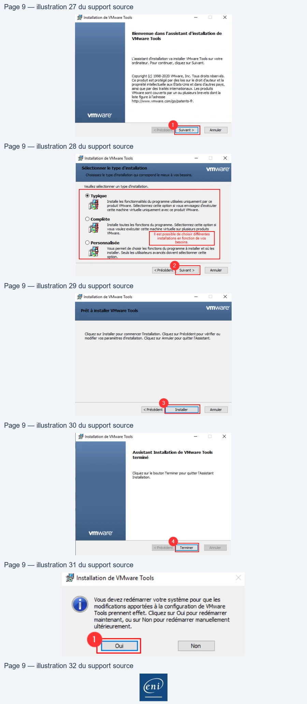

Transcription du document du Drive TSSR. La mise en forme est adaptée au Web ; les compléments IA du portail sont présentés séparément.
Services réseau en environnement Microsoft
Démonstration 01 du module 01
Cette démonstration décrit les différentes étapes relatives à l’installation du système Microsoft
Server, en mode graphique.
•
Prérequis
o Disposer d’une ISO Windows Server (ici en_windows_server_2019_x64).
o Disposer d’un logiciel de virtualisation (ici VMware Workstation 15.5.2 Pro)
•
Créer votre machine virtuelle Windows Server
•
Démarrer votre VM
Il faut démarrer la nouvelle machine virtuelle en sélectionnant votre machine virtuelle puis en
cliquant sur la flèche verte.
Page 1/9
© ENI – Tous droits réservés
(B® w2019 - VMware Workstation
.
.
-
ra
a
Elle
Edit
View
VM
Tabs
Help
Br
©
©
©
©
FJ Oo
|
+
i
x
SEE)
@ Home
C1 w2019
D
Type here to search
+
a CJMy Computer
i W2019
W2019
Ci Shared VMs
> Power onthis virtual machine
à
<
Il est possible d'ajuster les
[FF Edit virtual machine settings
paramètres en fonction de vos
besoin. Attention toutefois à
:
respecter les prérequis.
+ Devices
Æ Memory
2GB
££} Processors
2
(Hard Disk (SCSI)
40GB
© CD/DVD (SATA)
Using file F:\2. L...
F3 Network Adapter
Bridged (Autom...
USB Controller
Present
di Sound Card
Auto detect
= Printer
Present
CDispla
Auto detect
ent
Services réseau en environnement Microsoft
•
Booter sur le CD afin de lancer le processus d’installation du système d’exploitation
Il faut appuyer sur n’importe quelle touche du clavier afin de démarrer le processus d’installation
de votre système d’exploitation (ici la touche « espace » sera utilisée).
•
Choisir sa région puis continuer le processus.
Il convient ici de choisir la région afin de continuer le processus.
Ici :
•
La langue d’installation sera l’Anglais
•
Le fuseau horaire sera celui de Paris
•
Les préférences du clavier seront Françaises
•
Lancement de l’installation du système d’exploitation
Ici, cliquer sur le bouton Install now (1) afin de passer à l’étape suivante.
Page 2/9
© ENI – Tous droits réservés
(& w2019 - VMware Workstation
File
Edit
View
VM
Tabs
Help
¥
ia)
D
IR}
Sy
* ||
Home
(F] w2019
O
Typehere
to
search
+
2019
(© MyComputer
i W2019
Le 20199)
CT Shared VMs
1
>
Power on this
virtual machine
[Ep Edit
virtual machine settings
Press any key to boot from CD or DVD...
od Windows Setup
==]
Windows Server’ 2019
1
Enter your language and other preferences and click "Next" to continue.
2
Services réseau en environnement Microsoft
•
Passer outre l’activation du système
Ici, cliquer sur le texte I don’t have a product key (1) pour passer à l’étape suivante.
•
Choisir la version du système d’exploitation que vous souhaitez installer.
C’est ici que s’opère le choix de la version du système d’exploitation. Ici, nous choisirons Windows
Server 2019 Standard (Desktop Experince)(1) puis cliquer sur le bouton « Next » (2) pour passer à
l’étape suivante.
Attention : Ssi Windows Server 2019 est sélectionné, seule la version Core sera installée (sans
interface graphique).
Page 3/9
© ENI – Tous droits réservés
old Windows Setup
bo). 8
Windows Server: 2019
1
Install now
Repair your computer
© 2018 Microsoft Corporation.
All rights reserved.
x
©) Gj Windows Setup
Activate Windows
If this is the first time you're installing Windows on this PC (or you're installing a different edition)
you need to enter a valid Windows product key. Your product key should be in the confirmation
email you received after buying a digital copy of Windows or on a label inside the box that
Windows came in.
The product key looks like this:XXXXX-XXXXX-XXXXX-XXXXX-XXXKK
If you're reinstalling Windows, select
I don’t have a product key. Your copy of Windows will be
automatically activated later.
|
EE]
1
Privacy
statement
I don't have a product ke
Next
Services réseau en environnement Microsoft
•
Validation du contrat de licence Microsoft
Pour passer à l’étape suivante, il faut accepter le contrat de licence de Microsoft en cochant la
case (1) puis en cliquant sur le bouton Next (2) pour passer à la suite.
•
Choix du type d’installation
Choisir Custom: Install Windows only (advanced) (1) afin de passer à la suite.
Page 4/9
© ENI – Tous droits réservés
Sc
re) 2% Windows Setup
a
Select the operating system you want to install
1
Operating system
Architecture
Date modified
Windows Server 2019 Standard
x64
9/15/2018
Windows Server 2019 Standard (Desktop Experience)
x64
9/15/2018
Windows Server 2019 Datacenter
x64
9/15/2018
Windows Server 2019 Datacenter (Desktop Experience)
x64
9/15/2018
Description:
(Recommended) This option omits most of the Windows graphical environment. Manage with a
command prompt and PowerShell, or remotely with Windows Admin Center or other tools.
En fonction des besoins, le choix de la version
peut différer
I
re) 1G Windows Setup
—
Applicable notices and license terms
IMPORTANT NOTICE (followed by LICENSE TERMS)
a)
Diagnostic and Usage Information. Microsoft automatically collects this
information, which may be associated with your organization, over the
internet, and uses it to help improve your installation, upgrade, and user
experience, and the quality and security of Microsoft products and services.
Windows Server has four (4) information collection settings (Security, Basic,
Enhanced, and Full), and uses the “Enhanced” setting by default. The
Enhanced level includes information required to: (i) run our anti-malware and
diagnostic and usage information technologies; (ii) understand device
quality, and application usage and compatibility; and (iii) identify quality
issues in the use and performance of the operating system and applications.
Choice and Control: Administrators can change the level of information
v
1
2

Services réseau en environnement Microsoft
•
Localisation de l’installation du système d’exploitation
Par défaut, nous n’avons qu’un seul disque dans notre VM (1). Cliquer sur le bouton Next (2).
•
Démarrage de l’installation
L’installation a démarré
Page 5/9
© ENI – Tous droits réservés
le si Windows Setup
Which type of installation do you want?
Upgrade: Install Windows and keep files, settings, and applications
The files, settings, and applications are moved to Windows with this option. This option is only
available when a supported version of Windows is already running on the computer
1
Custom: Install Windows only (advanced)
The files, settings, and applications aren't moved to Windows with this option. If you want to
make changes to partitions and drives, start the computer using the installation disc. We
recommend backing up your files before you continue.
TS
re) Gj Windows Setup
Where do you want to install Windows?
1
~
Name
Total size
Free space
Type
«37
Drive0 Unallocated Space
40.0 GB
40.0 GB
4 Refresh
A Delete
OP Format
He New
@ Load driver
À Extend
2
Cne||
Services réseau en environnement Microsoft
•
Modification du mot de passe Administration
Une fois l’installation terminée, la VM redémarrera automatiquement. Sur cet écran, il faudra
customiser le mot de passe administrateur (1) puis cliquer sur le bouton Finish afin de finaliser le
processus de configuration.
•
Finalisation de l’installation
À la suite de la modification du mot de passe Administrateur, la page de connexion au serveur
Page 6/9
© ENI – Tous droits réservés
a.
Gj Windows Setup
Installing Windows
Status
Jf Copying Windows files
Getting files ready for installation (2%)
Installing features
Installing updates
Finishing up
1 Type a password for the built-in administrator account that you can use to sign in to this computer.
User name
2
>
Finish
Services réseau en environnement Microsoft
apparaît.
•
Test de connexion au serveur
Sur la mire de connexion appuyer sur les touches de votre clavier « Ctrl » « Alt » » Inser »
simultanément afin de pouvoir renseigner le login et mot de passe (1) puis appuyer sur la touche
« Entrée » du clavier pour accéder au bureau du serveur.
•
Installation des VMware Tools
Pour finaliser l’installation et faciliter un certain nombre d’actions (presse-papier par exemple)
Page 7/9
© ENI – Tous droits réservés
#
File.
,
Ps CsA
to nec.SS
-
=
dd
14:56
vendredi 21 août
<j
Q me
Administrator
SS
Oe
Services réseau en environnement Microsoft
l’installation des VMware Tools est nécessaire.
Faites un clic droit sur l’onglet portant le nom de la VM (1) puis cliquer sur Install VMware Tools… (2)
•
Lancement de l’installation de VMware Tools
Ouvrir l’explorateur de document (1) puis double cliquer sur le DVD Drive (D :) VMware Tools (2)
•
Installation de VMware Tools
Cliquer sur le bouton Suivant (1) pour démarrer l’installation. Cliquer sur le bouton Suivant (2) afin de
Page 8/9
© ENI – Tous droits réservés
(G! W2019 - VMware Workstation
File
Edit
View
VM
Tabs
Help
H-
©
Le
DE HER
T
1
i
x
5)
pe here to search
%
lose Tab
=| 1 MyComputer
©
Power
>
[Tp W2019
©
Removable Devices
>
rJ Shared VMs
Pause
a
Send Ctrl+Alt+Del
Grab Input
[F&
Snapshot
>
Server Manage
Capture Screen
Manage
>
2
Install VMware Tools...
PSS
À Dashboarl
B
local Serv
1
~
rn
15:06
s
©
ft
@
BB
ss
A
te 0200 A
Bl\P
+ | This PC
-
Qo
x
| Fite | Computer
View
e
_
4 G >ThisPC
v ® | Search
This PC
P
Yo Quick access
Folders (7
MI Desktop
3D Objects
Desktop
Ÿ Downloads
|]
En
=] Documents
Documents
Downloads
="
+
EM This PC
h Music
Pictures
> Network
@
Ls
a Videos
Devices and drives
(2)
2
Local Disk (C:)
DVD Drive (D:) VMware Tools

Services réseau en environnement Microsoft
continuer l’installation. Cliquer sur le bouton Suivant pour engager l’installation (3)
Cliquer sur le bouton Terminer (4) pour finaliser l’installation.
•
Redémarrage VM suite installation VMware Tools
Cliquer sur le bouton Oui (1) afin de redémarrer la VM et la prise en compte des paramètres des
VMware Tools nouvellement installés.
Page 9/9
© ENI – Tous droits réservés
15 Installation de VMware Tools
—
x
#1 Installation de VMware Tools
—
x
vmware’
Bienvenue dans l'assistant d'installation de
VMware Tools
Veuilez sélectionner un type d'instalation.
assistant d'installation va installer VMware Tools sur votre
© Typique
.
;
ordinateur. Pour continuer, diquez sur Suivant.
Installe les fonctionnalités du programme utilisées uniquement parce
produit VMware. Sélectionnez cette option si vous envisagez d'exécuter
cette machine virtuelle uniquement avec ce produit VMware.
Copyright (c) 1998-2020 VMware, Inc. Tous droits réservés.
.
Ce produit est protégé par des lois sur le droit d'auteur et la
O complète
propriété intellectuelle aux Etats-Unis et dans d'autres pays,
Installe toutes les fonctions du programme. Sélectionnez cette option si
ainsi que par des traités internationaux. Les produits
& eeeSe ees
VMware sont couverts par un ou plusieurs brevets dont la
VMware.
RER
iste figure à l'adresse
installations en fonction de vos
http://www. vmware.com/go/patents-fr.
O Personnalisé
Ferre
ie
Vous permet dechoisir les fonctions du programme à installer et où les
vmware
instaler, Seis ls tlsatews avancés doivent sélectionne cette
1
2
< Précédes
[suivant > ||
|
Annuler
| <Précéden
Annuler
1
Installation de VMware Tools
—
x
18 Installation de VMware Tools
-
x
vmware
Assistant Installation de VMware Tools
terminé
Cliquez sur Installer pour commencer l'installation. Cliquez sur Précédent pour vérifier ou
modifier vos paramètres d'instalation. Cliquez sur Annuler pour quitter l'Assistant.
Clavele bouton Terminer pour quitter [Assistant
3
4
< PrécédentD)
Annuler
< Précédent
Annuler
5 Installation de VMware Tools
Vous devez redémarrer votre système pour que les
modifications apportées à la configuration de VMware
Tools prennent effet, Cliquez sur Qui pour redémarrer
maintenant, ou sur Non pour redémarrer manuellement
ultérieurement.
ent
